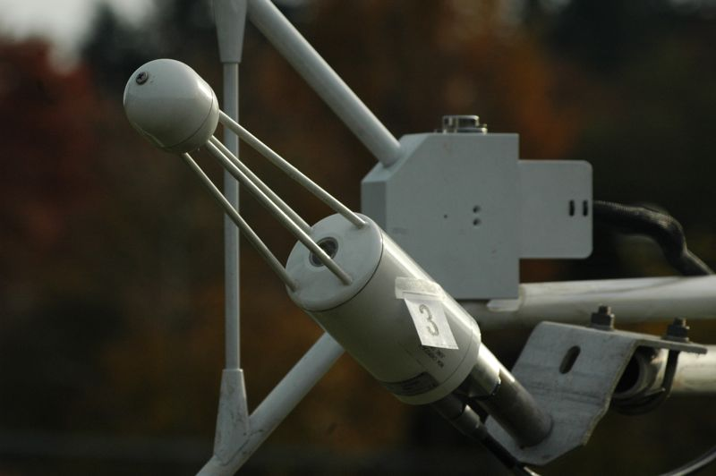

|
|
|
Fast Infrared Gas Analyzer with measurement path |

The infrared gas analyzer measures the absorption of specific wavelengths in the near-infrared, where water vaopur is absorbing. What else than water vapour could affect the absorption? How is water vapor backed-out?
Page: 9 of 11 (81%)